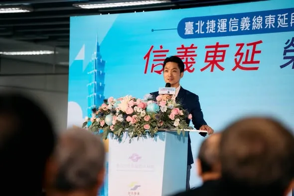
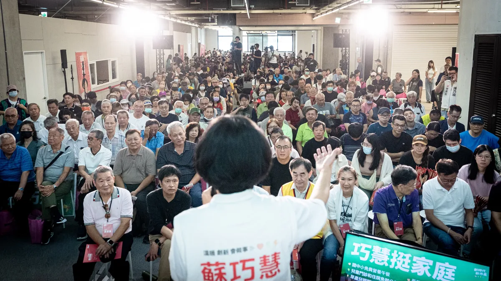
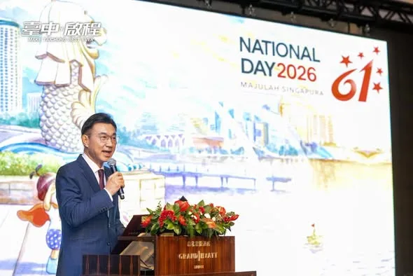
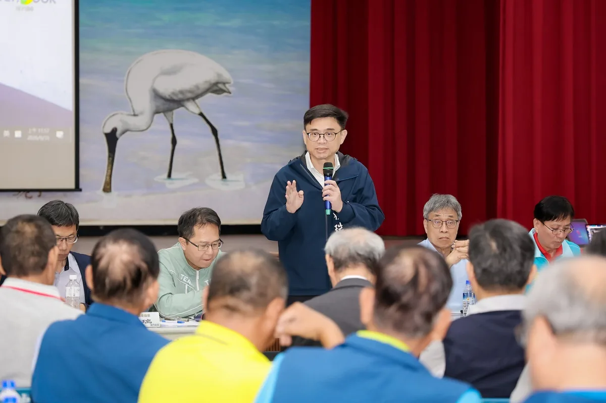
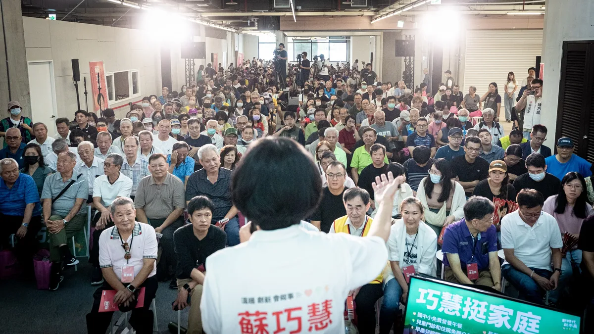
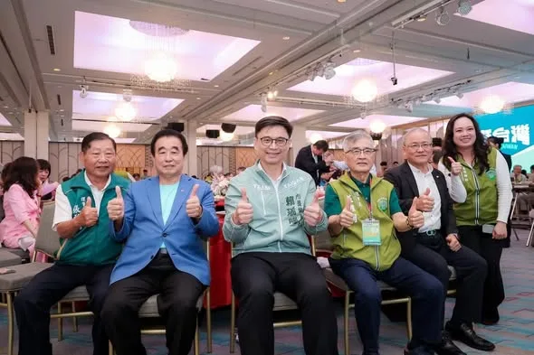

台中青年站出來！何欣純三大青年行動 青年局 青創基地 AI研習所備選
Posts
台中青年站出來！何欣純三大青年行動 青年局 青創基地 AI研習所備選

感謝雲林鄉親相挺巧慧！ 在新北市，有80萬雲林鄉親在這裡生活，大家一起打拚，一起讓新北持續前進。 未來，我要舉辦 #雲林日，推廣雲林的好產品、好文化，更要推動 #AI技職人才交流計畫，串連新北、雲林產官學界，讓人才交流、促進兩個城市的發展，更讓產業升級！ 我們一起努力，讓新北和雲林攜手向前，一起進步、一起贏！
立法院第十一屆第六會期正式開始，我也和往年一樣一早到立法院完成報到。 這個會期我也會全力以赴，為新北持續爭取資源，也希望立法院盡快審理明年度總預算，讓大家盡早拿到普發現金。

「青純力應援團」成軍 何欣純推 AI 工具補助挺青年 台中市長候選人、立法委員何欣純今（31） […] 〈 「青純力應援團」成軍 何欣純推 AI 工具補助挺青年 〉這篇文章最早發佈於《 何欣純官方網站｜2026 台中市長候選人 》。
@a_chun1973:從首投族手中接下市長參選登記表，我感受到的，是年輕世代對台中未來的期許。特別謝謝「青純力應援團」給我滿滿的建言與鼓勵❤️ 台中應該是一座讓年輕人有舞台、有機會、更有未來的城市！因此，我提出三項青年行動： 🎯 成立「青年局」 🎯 打造「山海屯城青創基地／創客中心」 🎯 成立「AI創新人才研習所」 我要和年輕朋友一起拚、一起衝，用年輕的力量帶動城市向前，讓台中持續欣欣向榮 🌱✨
#臺中農產外交官 出任務！ 把 #臺中好農產 推向世界 🌍 臺中不只是製造業大城，也是農業大城。身為農家子弟，我知道農民不怕辛苦，最怕天災與滯銷。政府不能等受災才補助、等滯銷才促銷，必須比災害早一步、比農民多想一步！ 啟臣將推動五大行動：再造 #臺中領鮮 品牌、營養午餐在地契作、成立智慧農業臺中隊、升級 #臺中農易通 APP，並建置農業災害預警細胞簡訊。 讓科技走進農田、在地食材走進校園、「臺中領鮮」走向世界。農民認真打拚，政府就要做最大的後盾！💪 #臺中啟程 #打造旗艦城 #臺中味 #安心味

治水沒有終點！從單點改善走向整體流域治理，打造更有韌性的高雄 今早我和 邱志偉 委員，陪同經濟部長龔明鑫、農業部長陳駿季及中央、地方團隊，從梓官一路到岡山、永安，針對北高雄治水量能、農漁業災損及後續工程逐案檢討。 這波豪雨，北高雄多區達到超大豪雨等級，梓官最大24小時雨量539毫米、橋頭及彌陀達540毫米，梓官事件累積雨量更達1101毫米。高雄26座滯洪池、排水及抽水系統皆發揮成效，面對極端氣候挑戰，我們也會持續提升整體防洪韌性，讓各項治水建設更加完善。 因此，我再次向中央爭取支持土庫流域13.8億元整體工程、北溝流域5.1億元治理計畫，並要求持續推進滯洪池、抽水站、老舊機組汰換及護岸改善；地方反映的典寶溪分洪方案，也請相關單位進一步評估。 對於受災農漁民，我與高雄隊立委先前共同爭取畜牧業救助、農漁業災損現金救助及低利貸款，今天也再請農業部研議延長貸款免息期間，以「從優、從寬、從簡、從速」的原則，減輕大家復耕、復養的壓力。 高雄下一階段的治水，要推動「精準治水、韌性治城」。 從過去的單點改善，進一步走向整體流域治理，整合各項防汛硬體，提升城市防災韌性。 未來，我會持續與高雄隊友攜手，逐項改善、全區補強，守護市民生命財產安全，守住農漁民打拚的家園。 黃秋媖-動保議員 蔡秉璁 高雄向前衝
今天我從首投族手中接下「市長參選登記表」。薄薄的一張紙，承載的卻是年輕世代對台中的期待❤️ 感謝「青純力應援團」為我加油，也謝謝每一位台中純派，成為我最堅定的靠山！ 台中20至39歲青年超過全市人口四分之一，我希望年輕人不只留得下來，更能在台中勇敢追夢。因此，我提出三項青年行動： 🔹 成立青年局｜整合就學、就業、創業與國際交流資源 🔹 打造山海屯城青創基地｜提供共享空間、創業育成，支持青年走向國際 🔹 成立AI創新人才研習所｜補助AI數位工具，讓青年掌握新科技、提升競爭力 年輕人的未來，就是台中的未來。我要用行動、溫度、創新，陪青年一起把夢想留在台中、把台中變得更好！ 也邀請大家 9月2日星期三上午，一起到豐樂公園綜合活動中心，陪我正式登記參選台中市長💪💚
@schuanglawyer:今天非常幸運✨感謝天公作美，在我們準備開始掃桃園觀光夜市前，從傍晚開始下的雨就停了！ 原本擔心開學前夕人潮會受影響，沒想到一走進夜市，迎面而來的是滿滿的熱情問候與人潮。 感謝特地冒雨前來等我的市民，有一對年輕夫妻帶著五個活潑可愛的小寶貝，專程來為我加油。看見大家高舉杰伴、企鵝阿爸應援手板，給了我很大的力量。還巧遇中壢國小的同學、我的老班長，直接開啟同學會模式。 謝謝詹德男會長熱情帶路，讓我們大飽口福，還跟桃園隊夥伴一起PK套圈圈，重溫美好的童年時光。每個人、每個世代，都可以找到自己喜歡的事，夜市就是如此神奇又迷人的地方✨ 世杰向大家承諾，未來擔任市長，我會繼續守護這份美好！不只要升級桃園夜市，還要串聯大廟、藝文特區，打造觀光新廊道。讓在地商家賺大錢，更要讓國際旅客把桃園列為必訪首選，打造桃園成為走向國際的指標城市🌍 桃園的未來，我們一起大步向前走！心桃園，動起來 💖


臺北捷運 #信義線東延段 正式通車！🚇 今天下午，首班列車從全新的「廣慈/奉天宮站」出發。 對許多住在信義區東側的市民朋友來說，這一天期待已久。從今天開始，捷運來到家門口，也讓通勤、洽公、育兒、休閒，都多了一個更方便的選擇。 這 1.4 公里，為臺北帶來五個重要改變： 一、捷運路網擴大至信義區東側 福德街周邊居民不必再搭公車到象山、永春轉乘，從廣慈/奉天宮站上車，即可直達臺北101、大安森林公園、臺北車站、士林、北投、淡水。 二、通勤時間更穩定 信義區東側居民多了一個不受路面交通影響的公共運輸選擇，上下班時間也更好掌握。 三、完善在地生活圈 串聯廣慈博愛園區、信義區行政中心，讓長輩、身心障礙朋友及育兒家庭洽公、使用社福資源時，少走一段路、少一次轉乘。 四、帶動地方繁榮 串聯奉天宮、在地商圈、市場及親山步道，讓更多人走進信義區東側，也為地方帶來更多人流與商機。 五、「臺北捷運六線齊發 2.0」持續推進 信義線東延段通車後，萬大線一期、南北環段、東環段也將接力推進，持續完善捷運路網，改善內湖及整體市區交通。 信義線東延段被稱為「史上最難捷運工程」。 一路走來，工程團隊克服複雜地質、狹窄施工空間等重重挑戰。短短 1.4 公里，背後是10 年的努力。 今天終於能把這座車站交給市民朋友，這份成果是大家共同努力的結果。謝謝歷任市長、市府團隊、捷運工程團隊及北捷公司，也謝謝在地民意代表、里長和居民，這些年來對施工的支持與體諒。 今年適逢臺北捷運通車 30 週年，我們用信義線東延段，再寫下新的歷史一頁。 等了10 年，歡迎大家一起來搭車！🚇

有一件事， 我這幾年一直在做， 想像台南未來的樣子。 十年後的台南， 會是什麼模樣？ 孩子長大後， 希望他們在哪裡工作？生活？ 年輕人回到台南， 能不能找到一份有穩定的工作？ 農民辛苦了一輩子， 能不能因為科技輔助，讓土地有更好的價值？ 老人家需要醫療的時候， 能不能不用舟車勞頓，就近得到最好的照顧？ 這些問題， 我想了很久。 慢慢地， 每一條路， 每一個方向， 開始在我的腦海裡變得清楚。 農業科技、 半導體與AI、 綠能與智慧科技、 醫療科技。 從溪北到溪南， 從城市到農村， 從產業到生活。 我想做的， 是讓台南原本就有力量擴展出去。 讓農業更有競爭力， 讓科技產業留下更多人才， 讓醫療、交通、觀光與生活， 都跟著城市一起進步。 所以這些日子， 我一直在走、一直在看、一直在聽。 看城市的每一個角落， 也看每一個台南人對未來的期待。 因為我相信， 一座城市的藍圖， 不能只畫在紙上。 它要烙印在心裡， 再一步一步， 變成我們每天看得見的生活。 台南的藍圖， 早就印在我的腦海裡。 現在， 我要和大家一起， 把藍圖一步一步變成台南的未來。

感謝雲林鄉親相挺巧慧！ 在新北市，有80萬雲林鄉親在這裡生活，大家一起打拚，一起讓新北持續前進。 未來，我要舉辦 #雲林日，推廣雲林的好產品、好文化，更要推動 #AI技職人才交流計畫，串連新北、雲林產官學界，讓人才交流、促進兩個城市的發展，更讓產業升級！ 我們一起努力，讓新北和雲林攜手向前，一起進步、一起贏！
🇸🇬 祝賀新加坡61週年國慶！ 攜手共創韌性未來 今晚非常榮幸代表立法院與韓國瑜院長，出席新加坡第61屆國慶酒會，向新加坡政府與人民致上最誠摯的祝福！新加坡建國61年來，從區域港口成長為全球金融與科技樞紐，其「不斷創新、為下一代準備未來」的精神令人敬佩。臺星經貿合作非常密切，2025年雙邊貿易額已突破530億美元，在 AI 與半導體產業加持下，臺灣更成為新加坡最大的商品貿易夥伴。 自2012年起，我創立「臺星國會聯誼會」並擔任12年會長。本屆立法院更有高達84位跨黨派立委加入，展現國會跨越黨派、共同珍惜臺星情誼的決心。未來我們將結合臺中精密機械等產業優勢與跨領域合作，持續深化臺星合作，將這份深厚情誼世代傳承！ #臺星友好 #新加坡國慶 #國會外交 #跨黨派合作 #能在地能國際 #讓世界看見臺灣 #讓臺中走向國際

從首投族手中接下市長參選登記表，我承載的是青年對台中的期待。謝謝「青純力應援團」給我許多建言和鼓勵！ 台中是一座屬於年輕人的城市，我認為青年朋友在台中應該要有舞台、有機會，更要有未來！因此我提出三項青年行動： 🎯成立 #青年局 🎯打造「山海屯城青創基地／創客中心」 🎯成立「AI創新人才研習所」 我會跟年輕朋友一起拚、一起衝，讓台中這座城市持續欣欣向榮！ #心存大台中 #市長換欣_台中創新
台中青年佔1/4！何欣純 留下青年幫青年追夢
#臺中農產外交官 出任務！ 把 #臺中好農產 推向世界 🌍 臺中不只是製造業大城，也是農業大城。身為農家子弟，我知道農民不怕辛苦，最怕天災與滯銷。政府不能等受災才補助、等滯銷才促銷，必須比災害早一步、比農民多想一步！ 啟臣將推動五大行動：再造 #臺中領鮮 品牌、營養午餐在地契作、成立智慧農業臺中隊、升級 #臺中農易通 APP，並建置農業災害預警細胞簡訊。 讓科技走進農田、在地食材走進校園、「臺中領鮮」走向世界。農民認真打拚，政府就要做最大的後盾！💪 #臺中啟程 #打造旗艦城 #臺中味 #安心味

身心障礙網友陳情在臺南難找工作

@su.chiaohui:巧慧當市長 提高預算！做勞工家庭後盾！ 非常感謝超過一百個工會團體相挺為我成後援會，過去十年，我們一起在立法院推動各項法案修訂，一步步改善勞動環境。 大家在各行各業努力打拚，共同締造了台灣的經濟繁榮，因此未來我擔任市長，將會提高勞工相關預算，而且不只💛照顧勞工，更要💛照顧工會、💛照顧勞工家庭！ 全力做新北超過216萬勞工朋友的後盾，讓大家都能在新北安居樂業，一起迎接新北的新時代！
今天非常幸運✨感謝天公作美，在我們準備開始掃桃園觀光夜市前，從傍晚開始下的雨就停了！ 原本擔心開學前夕人潮會受影響，沒想到一走進夜市，迎面而來的是滿滿的熱情問候與人潮。 感謝特地冒雨前來等我的市民，有一對年輕夫妻帶著五個活潑可愛的小寶貝，專程來為我加油。看見大家高舉杰伴、企鵝阿爸應援手板，給了我很大的力量。還巧遇中壢國小的同學、我的老班長，直接開啟同學會模式。 謝謝詹德男會長熱情帶路，讓我們大飽口福，還跟桃園隊夥伴一起PK套圈圈，重溫美好的童年時光。每個人、每個世代，都可以找到自己喜歡的事，夜市就是如此神奇又迷人的地方✨ 世杰向大家承諾，未來擔任市長，我會繼續守護這份美好！不只要升級桃園夜市，還要串聯大廟、藝文特區，打造觀光新廊道。讓在地商家賺大錢，更要讓國際旅客把桃園列為必訪首選，打造桃園成為走向國際的指標城市🌍 感謝每一雙緊握的手、每一句世杰加油！感謝桃園觀光夜市管理委員會詹德男會長及幹部們、北桃園競總簡智翔副總幹事 @powerful_chien 、余信憲議員 @yu.councilor 、李光達議員 @lee_kung_da 、黃瓊慧議員 @qn_taiwan 、黃家齊議員 @jack790218 、李柏瑟議員候選人 @leeposhe_taoyuanmama 、東埔里江慶尚里長，佮世杰作伙來踅夜市！ 桃園的未來，我們一起大步向前走！心桃園，動起來 💖
從幸福城到旗艦城，臺中的下一步，要讓每個生活問題都有解方！💪 今天受邀出席 #城市治理綜合座談，與柯文哲理事長、民眾黨黃國昌主席及各界專家交流。城市治理不是喊口號，而是要把市民每天面對的問題，一件一件解決。 在主題分享中，我談到臺中的下一階段，要發揮精密製造優勢，發展AI機器人與會展經濟，結合海空雙港，讓世界看見臺中、讓訂單走進臺中，從幸福城升級為代表臺灣的旗艦城市。 主題分享後，進入QA階段，大家問得直接，我也具體回答。八年前，市民最關心空氣；現在，交通排第一。免費公車不是只少收10元，更要重整路線、增加班次、提升準點率並改善司機待遇；透過四大轉運中心，串聯快速公車、YouBike與社區接駁。捷運必須多線齊發，清泉崗機場也應朝千萬人次規模擴建，讓 #中進中出 更加便利。 有市民問到中西區老屋與閒置空間的問題。對我來說，中西區不是臺中的過去，而是找回城市靈魂、重新出發的地方。我把 #競選總部設在西區，就是要從舊城出發，活化百年市場與新民街倉庫群，引進音樂、展演及青年創意，讓舊城真正活起來。 也有市民關心，臺中能不能擁有自己的親子探索樂園？我支持積極評估，並持續增加親子設施、特色公園與共融遊戲場，讓年輕人敢生、養得起，更讓整座城市陪孩子好好長大。 近300萬鄉親一起組成最強臺中隊，臺中好，中臺灣就更好；中臺灣更好，臺灣一定更好！ #從幸福城到旗艦城 #治理從地方開始 #臺中啟程 #打造旗艦城

@su.chiaohui:感謝雲林鄉親相挺巧慧！ 在新北市，有80萬雲林鄉親在這裡生活，大家一起打拚，一起讓新北持續前進。 未來，我要舉辦「雲林日」，推廣雲林的好產品、好文化，更要推動「AI技職人才交流計畫」，串連新北、雲林產官學界，讓人才交流、促進兩個城市的發展，更讓產業升級！ 我們一起努力，讓新北和雲林攜手向前，一起進步、一起贏！
@su.chiaohui:立法院第十一屆第六會期正式開始，我也和往年一樣一早到立法院完成報到。 這個會期我也會全力以赴，為新北持續爭取資源，也希望立法院盡快審理明年度總預算，讓大家盡早拿到普發現金。

🇸🇬 祝賀新加坡61週年國慶！ 攜手共創韌性未來 今晚非常榮幸代表立法院與韓國瑜院長，出席新加坡第61屆國慶酒會，向新加坡政府與人民致上最誠摯的祝福！新加坡建國61年來，從區域港口成長為全球金融與科技樞紐，其「不斷創新、為下一代準備未來」的精神令人敬佩。臺星經貿合作非常密切，2025年雙邊貿易額已突破530億美元，在 AI 與半導體產業加持下，臺灣更成為新加坡最大的商品貿易夥伴。 自2012年起，我創立「臺星國會聯誼會」並擔任12年會長。本屆立法院更有高達84位跨黨派立委加入，展現國會跨越黨派、共同珍惜臺星情誼的決心。未來我們將結合臺中精密機械等產業優勢與跨領域合作，持續深化臺星合作，將這份深厚情誼世代傳承！ #臺星友好 #新加坡國慶 #國會外交 #跨黨派合作 #能在地能國際 #讓世界看見臺灣 #讓臺中走向國際

從首投族手中接下市長參選登記表，我感受到的，是年輕世代對台中的期待。謝謝「青純力應援團」給我滿滿的建言與鼓勵❤️ 台中應該是一座讓年輕人有舞台、有機會、更有未來的城市！因此，我提出三項青年行動： 🎯 成立 #青年局 🎯 打造「山海屯城青創基地／創客中心」 🎯 成立「AI創新人才研習所」 我要和年輕朋友一起拚、一起衝，用年輕的力量帶動城市向前，讓台中持續欣欣向榮 🌱✨
畢業後幹嘛不留在台南？這句話我問過好多大學生😳 猜猜看，年輕人的答案第一名是什麼？不是薪水，也不是滷肉飯太甜（笑），而是「下班之後沒地方去」。沒有生活圈，找不到同齡的朋友。 福岡打造「年輕人的創業城」、奧斯丁是「現場音樂之都」、波特蘭是「文青之都」，每座城市都在用心留住年輕人。 那台南呢？我覺得除了薪水高、福利好，更重要的是把「下班以後的生活清單」一項一項做出來，打造一座城市，讓年輕人變成他們想成為的樣子。 台南一定有機會，我會繼續加油！💪 #台南 #青年留才 #下班後的生活圈 #陳亭妃

治水沒有終點！從單點改善走向整體流域治理，打造更有韌性的高雄 今早我和 邱志偉 委員，陪同經濟部長龔明鑫、農業部長陳駿季及中央、地方團隊，從梓官一路到岡山、永安，針對北高雄治水量能、農漁業災損及後續工程逐案檢討。 這波豪雨，北高雄多區達到超大豪雨等級，梓官最大24小時雨量539毫米、橋頭及彌陀達540毫米，梓官事件累積雨量更達1101毫米。高雄26座滯洪池、排水及抽水系統皆發揮成效，面對極端氣候挑戰，我們也會持續提升整體防洪韌性，讓各項治水建設更加完善。 因此，我再次向中央爭取支持土庫流域13.8億元整體工程、北溝流域5.1億元治理計畫，並要求持續推進滯洪池、抽水站、老舊機組汰換及護岸改善；地方反映的典寶溪分洪方案，也請相關單位進一步評估。 對於受災農漁民，我與高雄隊立委先前共同爭取畜牧業救助、農漁業災損現金救助及低利貸款，今天也再請農業部研議延長貸款免息期間，以「從優、從寬、從簡、從速」的原則，減輕大家復耕、復養的壓力。 高雄下一階段的治水，要推動「精準治水、韌性治城」。 從過去的單點改善，進一步走向整體流域治理，整合各項防汛硬體，提升城市防災韌性。 未來，我會持續與高雄隊友攜手，逐項改善、全區補強，守護市民生命財產安全，守住農漁民打拚的家園。 黃秋媖-動保議員 蔡秉璁 高雄向前衝
@a_chun1973:今天我從首投族手中接下「市長參選登記表」。薄薄的一張紙，承載的卻是年輕世代對台中的期待❤️ 感謝「青純力應援團」為我加油，也謝謝每一位台中純派，成為我最堅定的靠山！ 台中20至39歲青年超過全市人口四分之一，我希望年輕人不只留得下來，更能在台中勇敢追夢。因此，我提出三項青年行動： 🔹 成立青年局｜整合就學、就業、創業與國際交流資源 🔹 打造山海屯城青創基地｜提供共享空間、創業育成，支持青年走向國際 🔹 成立AI創新人才研習所｜補助AI數位工具，讓青年掌握新科技、提升競爭力 年輕人的未來，就是台中的未來。我要用行動、溫度、創新，陪青年一起把夢想留在台中、把台中變得更好！ 也邀請大家 9月2日星期三上午，一起到豐樂公園綜合活動中心，陪我正式登記參選台中市長💪💚

巧慧當市長 提高預算！做勞工家庭後盾！ 非常感謝超過一百個工會團體相挺為我成後援會，過去十年，我們一起在立法院推動各項法案修訂，一步步改善勞動環境。 大家在各行各業努力打拚，共同締造了台灣的經濟繁榮，因此未來我擔任市長，將會 #提高勞工相關預算，而且不只照顧勞工，更要照顧工會、照顧勞工家庭，全方位做大家的後盾！ ✅ 巧慧挺勞工 1. 調升職災慰問金、勞資爭議涉訟補助 2. 加碼補助高溫防暑設備 3. 擴大推動 #多元職訓、職務再設計，支持中高齡再就業 4. 獎勵資深人才加入青創團隊擔任創業教練 ✅ 巧慧挺工會 1. 改善工會辦公空間 2. 調高職業工會行政事務費、會務經費 3. 建立市府與工會 #直接對話機制 ✅ 巧慧挺家庭 1. 國中小免費營養午餐 2. 0-6歲 #免門診與住院部分負擔 3. 早產兒3萬元照顧津貼 4. 鼓勵 #企業組隊設托，友善職場獎勵金最高100萬元 5. 長輩假牙補助最高5萬元 6. 敬老卡升級 巧慧當市長，會全力做新北超過216萬勞工朋友的後盾，讓大家都能在新北安居樂業，一起迎接新北的新時代！

團結拚勝選，延續高雄綠色執政！ 信賴之友會、小英之友會的夥伴齊心相挺，為高雄下一個黃金十年一起努力。感謝信賴之友會會長莊維周醫師，多年投入國家醫療政策與公共衛生；也謝謝小英之友會會長黃來進，一直以來堅信價值、情義相挺。 從謝長廷市長、陳菊市長到陳其邁市長，一棒接一棒，推動城市轉型、重大建設與產業升級，累積出今天高雄的城市面貌。 高雄下一個十年，要有新的佈局。 我提出「大南方計畫」，要拚產業、留人才、強交通、顧生活。在歷任市長奠定的基礎上推動產業轉型、完善交通建設、照顧不同世代，為高雄布局下一個黃金十年。 高雄的進步，是高雄人共同的選擇；台灣的民主，是我們共同的價值。 最後90天，我們一起拚下勝選，延續綠色執政，讓高雄繼續為台灣拚出更好的未來！ 高雄小金剛許智傑 李柏毅 拚搏未來 康裕成 高雄市議長 姐姐的行動力 李喬如 何權峰 高雄市議員 簡煥宗 高雄市議員 黃彥毓 前鎮小港 我願意 邱俊憲 高雄市議員 湯詠瑜 詠瑜新選擇 陳慧文 高雄市議員 黃文益 高雄市議員 鄭孟洳 高雄市議員郭建盟 張勝富 高雄市議員 黃文志 高雄市議員 鄭光峰 高雄市議員 張博洋 尹立 左營楠梓市議員參選人 蔡秉璁 高雄向前衝 黃敬雅 Huang Ching-Ya 蘇致榮 鳳山阿榮 吳昱鋒-鎮港小前鋒 林慧欣 李昆澤 服務團隊
敢去就有路！巧慧帶大家一起迎接新時代！ 非常感謝今天爆場的客家鄉親給我支持和力量，更感謝金曲歌后 #米莎 特別到現場獻唱 ，給我祝福。 在米莎的金曲 #腳跡 中有一句歌詞「敢去就有路。」聽了真的特別有感觸。從一開始宣布參選新北市長，到今天最後倒數90天，我和大家一起前進，也越來越多人站出來和我們並肩前行。 今天我和大家報告我們的客家政見： ✅廣入校園社區，推廣客語及技藝課程 ✅擴大辦理 #客家信仰文化活動，挹注客家文史團體和地方社團 ✅媒合產業 #跨域合作，舉辦以客家為主體的商展和影展 ✅盤點低利用公有空間，提供客家青年更多新創孵育基地 ✅結合新科技，打造「客家文化AI資料庫」、「新北AI客語學習平台」 ✅擴大 伯公照護站設置，客家幣使用範圍 最後階段，我們一起拚，一起讓新北市迎接新時代！